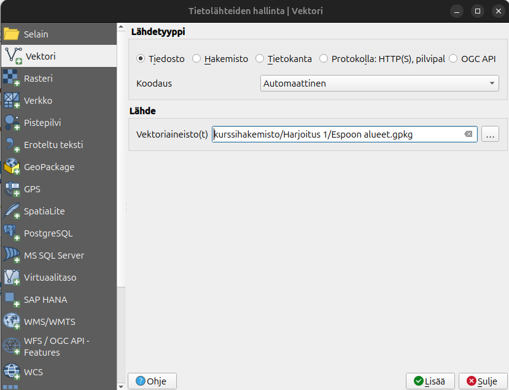
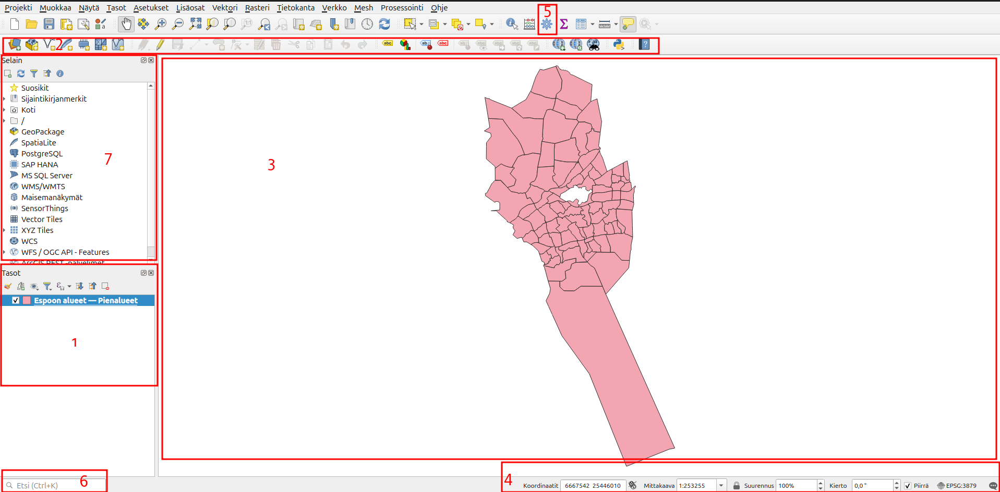
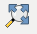
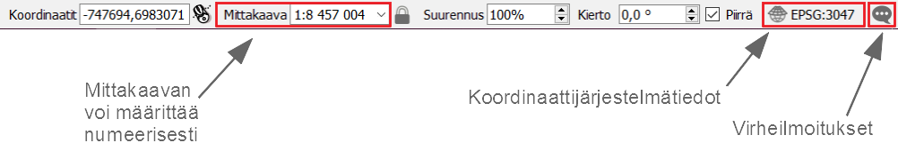
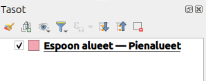
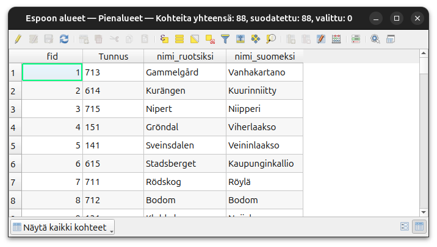
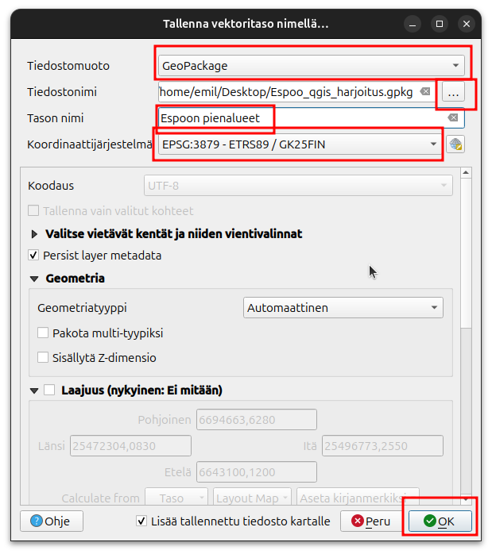

Harjoitus 1: QGISin käyttöliittymä
Harjoituksen sisältö
Harjoituksessa tutustutaan QGIS–ohjelmiston käyttöliittymään ja sen perustoimintoihin.
Harjoituksen tavoite
Kouluttautuja oppii käyttämään QGISin käyttöliittymää.
Kurssimateriaalien lataus
Kurssilla tarvittavat paikkatieto-aineistot on ladattavissa Google Drivestä linkistä
Avaa yllä oleva linkki ja klikkaa Lataa. Tämä lataa aineistot kokonaisuudessaan pakattuna zip-tiedostona Kurssihakemisto.zip. Pura kurssimateriaalit omalle tietokoneellesi haluamaasi kansioon niin, että löydät ne helposti harjoituksia tehdessä. Kun kurssimateriaalissa viitataan ../kurssihakemisto/, tarkoitetaan itse määrittelemääsi kurssihakemiston polkua. Kysy tarvittaessa apua kouluttajalta.
QGISin käyttöliittymä
Käynnistä QGIS. QGISin käyttöliittymä saattaa aueta englanninkielisenä ensimmäisellä käyttökerralla. Voit vaihtaa kielen suomeksi asetuksista Settings → Options → General → User Interface Translation → suomi. Paina lopuksi OK.

Huomaa, että kielen vaihtamisen aktivoimiseksi sinun tulee käynnistää
QGIS uudelleen.
Lisää ensimmäinen vektorimuotoinen paikkatietoaineisto
napsauttamalla Avaa tietolähteiden hallinta –pikakuvakenäppäintä: 
Löydät saman toiminnon myös Tasot-valikosta Lisää taso → Lisää vektoritaso… (Ctrl+Shift+V). Valitse avautuvasta ikkunasta vasemmalta puolelta Vektori-välilehti. Lisää aineisto kurssin materiaaleista (…/kurssihakemisto/Harjoitus 1/). Valitse nyt Espoon kaupungin pienalue-aineistoa eli Espoon alueet.gpkg-tiedosto. Paina lopuksi Lisää ja sulje ikkuna.

Aineiston pitäisi näkyä seuraavan kuvan esimerkin mukaisesti (huom! värit saattaa olla eri).

QGIS-käyttöliittymän osat
1. Tasoluettelo Tähän osioon tulevat näkyviin paikkatietoaineistot, jotka näkyvät karttaikkunassa. Voit hallita tasojen järjestystä ja näkyvyyttä.
2. Työkalupalkit Työkalupalkit sisältävät erilaisia työkaluja. Omassa tietokoneessasi voi olla näkyvissä enemmän tai vähemmän työkalupalkkeja. Napauttamalla hiiren oikea näppäintä työkalupalkkien päällä, voit piilottaa tai ottaa esiin työkalupalkkeja. Voit myös raahata työkalupalkkeja eri kohtiin.
3. Karttaikkuna Karttaikkunaan piirtyvät ne paikkatietoaineistot, jotka ovat tasoluettelossa aktivoituna näkyväksi. Voit lähentää ja loitontaa karttaa sekä vapaasti siirtää näkymää hiiren avulla (koita myös hiiren scrollia).
4. Tilapalkki Tilapalkista näet hiiren kursorin koordinaatit, minkä lisäksi voit muuttaa mittakaavaa ja koordinaattijärjestelmää.
5. Prosessointi-työkalut Painamalla ratasta saat auki Prosessointityökalut omana paneelina, jolloin ne ovat aina helposti löydettävissä. Prosessointyökaluista löydät esim. vektori- ja rasterianalyysityökalut.
6. Hakutoiminto Joskus on vaikea muistaa, mistä mikäkin työkalu ja toiminto valikosta löytyy. Hakutoiminnolla voit helposti etsiä näitä näppäilemällä CTRL+K ja kirjoittamalla etsimäsi toiminnon hakukenttään.
7. Selain-paneeli Tästä saat auki tiedostot ja rajapinnat. Voit selata oman tietokoneen kansioita ja ottaa yhtettyä tietokantoihin.
Kokeile itse
Kokeile erilaisia työkaluja ja tarkastele ainakin seuraavien työkalujen toimintaa. Työkalupalkin toiminnot (käyttöliittymän yläosassa):

Paikanna edellä näkyneestä työkalurivistä seuraavat työkalut ja tunnista niiden tarkoitukset:
| Zoomaa täydeksi |  |
| Zoomaa tasoon | |
| Näytä kohteen tiedot |  |
| Avaa attribuuttitaulu | |
| Mittaa viivan pituus |  |
Kokeile myös seuraavia tilapalkin toimintoja ja pohdi niiden tarkoituksia työkaluina:

Tasoluettelon toiminnot (käyttöliittymässä vasemmalla puolella):

Attribuuttitaulu
Valitse Pienalue-karttataso ja avaa ominaisuustietotaulukko, joko painamalla pikakuvaketta tai painamalla hiiren oikealla näppäimellä karttatason kohdalla sekä valitsemalla Avaa attribuuttitaulu. Voit järjestää ominaisuustietotaulun minkä tahansa kentän mukaan laskevaan tai nousevaan järjestykseen.

Kun olet tutkinut ominaisuustietotaulukkoa riittävästi, sulje taulukko.
Tiedoston tallennus
Voit tallentaa tason eri formaattiin (eli tehdä muunnos) klikkaamalla tasoa hiiren oikealla ja valita Vie -> Tallenna kohteet nimellä. Voit esimerkiksi tallentaa tasoa GeoPackage-muotoon (.gpkg). Valitse ensin Tiedostonimi, painamalla kolmen pisteen nappia. Valitse sopiva tallennuspaikka ja hyvä nimi (esim. “Espoo qgis harjoitus.gpkg”). Seuraavaan laatikkoon laitetaan Tason nimi. Miksi nimi kahteen kertaan? Koska GeoPackage-tiedostoon voi tallentaa useampaa tasoa. Eli sanotaan vaikka, että sinulla on meneillään projekti Leppävaarassa, mihin tarvitset pienalueet, luonnonsuojelualueet ja rakennukset. Voisit silloin tallentaa kaikki kolme tasoa samaan GeoPackage-tiedostoon ja antaa sille tiedostolle nimeksi vaikka “Leppävaaran superkiva projekti.gpkg”. Tämän tiedoston sisällä olisi sitten kolme tasoa. Eli sinulla olisi näppärästi kaikki projektiin liittyvät tasot samassa tiedostossa.
Tällä kertaa aloitetaan kuitenkin tallentamalla ainoastaan yhden tason yhteen tiedostoon. Anna tason nimeksi vaikkapa. “Pienalueet”. Koordinaatijärjestelmä olisi hyvä olla EPSG:3879. Jos joskus tarvitset aineistoja eri koordinaattijärjestelmään niin helppo tapa on tallentaa tasoa uudestaan, mutta vaihtamalla koordinaattijärjestelmää tässä kohtaa.
Paina tämän jälkeen OK.

GeoPackage on monipuolinen paikkatietoaineistoformaatti. Yhteen tiedostoon voi tallentaa useampi taso. Tavallisesti niin tasojen tyylit tallentuu QGISin projektitiedostoon, mutta voit myös halutessasi tallentaa tietyn tason tyyliä suoraan GeoPackage-tiedostoon. Tämä on erityisen näppärää kun haluat laittaa paikktietoaineiston tyyleineen kolleegalle. Silloin kaikki on tallessa yhdessä tiedostossa. GeoPackageen voi myös tallentaa kokonaisen QGIS-projektin, silloin voidaan myös saada kaikki projektin asetukset siirtymään GeoPackage-tiedoston kautta. Oikeasti GeoPackge on minitietokanta joka löytyy paikallisesti tietokoneellasi. Älä huolestu jos tietokanta kuulostaa pelottavalta, olet sitä jo käyttänyt tämän harjoituksen aikana. GeoPackagesta voit lukea lisää meidän blogista.
Tallenna vielä lopuksi aloittamasi QGIS-projekti omaksi projektitiedostokseen kurssihakemistoon, esimerkiksi nimellä ../kurssihakemisto/QGIS_harjoitus_1.qgz. Voit tehdä sen Projekti-valikosta valitsemalla Tallenna nimellä.